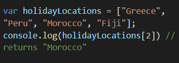
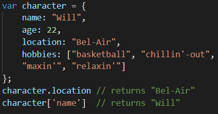
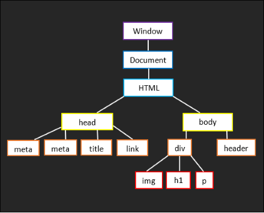
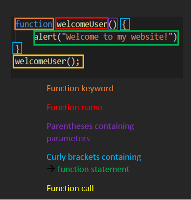

17 September 2021
JavaScript Fundamentals
HTML vs CSS vs JavaScript
HTML stands for HyperText Markup Language. It is the standard markup language used to create webpages. HTML basically defines the structure/framework and content of a webpage. You could think of HTML as the structure of the human body, i.e the bones.
CSS stands for Cascading Style Sheets. It is a style sheet language used for controlling the look, layout and formatting of a document written in a markup language. You can think of CSS as being the stylings of the body i.e., height, hair type and colour, skin colour, eye colour, etc.
JavaScript is a programming language that is used to make webpages more interactive for users. It essentially enhances the HTML and CSS elements, manipulating them being inactive features to interactive ones. Examples of this include creating dropdown menus or displaying animations, adding pop up windows after user input. Keeping on theme with the human body example, JavaScript would essentially be the nervous system, responsible for the movement of the body and the communication between its different parts.
Control Flow & Loops
Control flow is the order that function calls, statements, or instructions are executed in a programme. In general, the code is executed from the first line down to the last line. However, there are structures in the code that can alter the control flow, such as loops (for, while, do… while) and conditional statements (if, if…else). Loops are used to tell the programme to repeat a particular task until a certain condition is met. There are three types of looping statements: for, while, and do…while. For example, if you were exercising, do a push up while the number of push-ups you have done is less than 20. The act of doing a push up would loop, until you have met the condition of having done 20 push-ups. Once you have met this condition, the loop stops.
Arrays & Objects
Arrays are used when you want to create a list of multiple items in a single variable. Arrays are useful to use for creating an ordered collection of items. The items in the collection are then accessed by their numerical index position. In this structure, the first item in the array is stored at index [0], the second item is at index [1], and so on for the remaining items in the list. Items in an array can be accessed using the square bracket notation. An example of an array is shown below:
Objects are at data structure used in JavaScript to represent a ‘thing’ e.g., a person, a book, a country etc. Unlike arrays, objects are used to store a collection of data. It allows a single item to have many properties grouped together in key-value pairs. If you want to access the data inside an object, you can use either the dot or square bracket notation. An example is shown below:
The DOM & DevTools
The Document Object Model (DOM) is an application programming interface which allows programmers to interact with elements and objects in HTML. The DOM tree is a representation of the objects that make up the structure and content of a web-page document. The entire web-page document is represented as nodes and objects. The tree-like structure shows the relationships between the nodes and objects in a webpage. Nodes can be elements, text-content, attributes etc. The DOM allows for the manipulation of the webpage structure, content and style. The DOM is essentially the rope that ties HTML, CSS, and JavaScript together.
DevTools are programs that allow developers to test, and debug websites, and is accessed through your web browser. Through elements panel in DevTools, you can view the DOM tree of the website.
Functions
In JavaScript, a function is a block of reusable code. To declare a function, it must be defined with the function keyword, which is then followed by the function name, parentheses which contains the parameters, and then curly brackets which contains the statements that define what function will do. Once the function has been declared, it can then be called, which means the function will execute. Functions are useful as it enables code to be used as may times as you want, without having to rewrite the code every time you want to use it.
